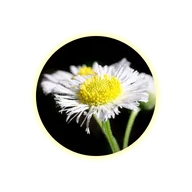

ग्लो

लेयर के शेप के बाहर एक कलर में हैलो। हार्डनेस इसे सॉफ़्ट फ़ेड से ठोस आउटलाइन में बदल देती है।
ग्लो लेयर के आकार के बाहर एक प्रभामंडल बनाता है। इसकी पहुँच के लिए त्रिज्या सेट करें, इसके रंग के लिए रंग और इसकी तीव्रता के लिए अल्फा सेट करें। कठोरता प्रभामंडल को नरम फ़ेड (कम) से ठोस रूपरेखा (अधिक) में बदलती है। ब्लेंडिंग मोड डिफ़ॉल्ट रूप से स्क्रीन है, जो आकार के आसपास के क्षेत्र को रोशन करता है; नॉर्मल रंग को वैसे ही पेंट करता है।
- स्पंदनशील ग्लो के लिए त्रिज्या को ऊपर और नीचे एनिमेट करें।
- ऐसे ग्लो के लिए जो किसी चित्र के आकार के बजाय उसके चमकीले हिस्सों से आता है, लाइट ग्लो या सॉफ्ट ग्लो का उपयोग करें।
सेटिंग्स
| सेटिंग | प्रकार | रेंज | डिफ़ॉल्ट |
|---|---|---|---|
| रेडियस | संख्या | 0 से 400 | 100 |
| अल्फा | संख्या | 0% से 100% | 75% |
| हार्डनेस | संख्या | 0 से 1 | 0.5 |
| कलर | कलर | – | #FFFFAA |
| ब्लेंडिंग मोड | विकल्प | नॉर्मल, मल्टिप्लाई, स्क्रीन | स्क्रीन |